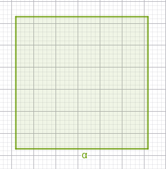
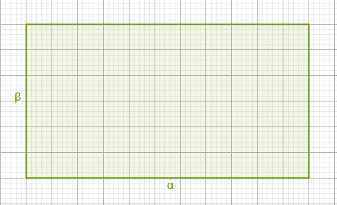
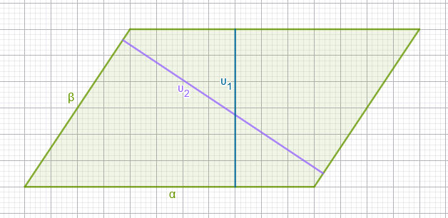
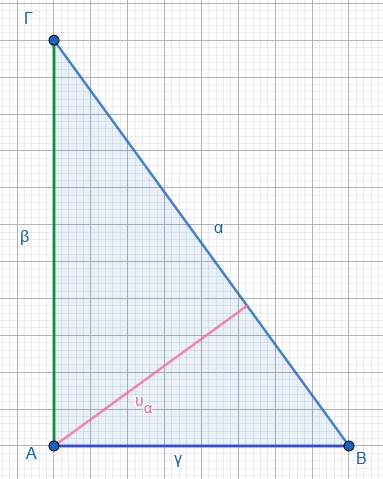
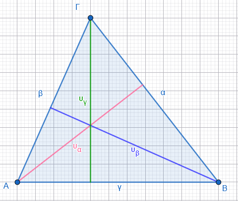
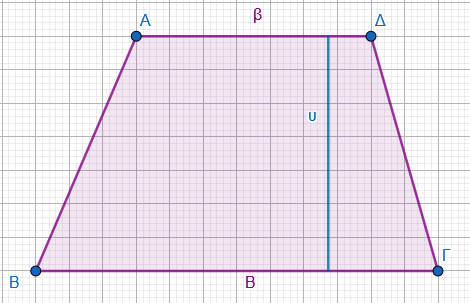
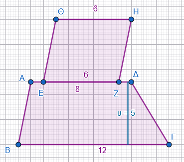

1 Εμβαδά επίπεδων σχημάτων
Το εμβαδόν μιας επίπεδης επιφάνειας είναι ένας θετικός αριθμός που εκφράζει την έκταση που καταλαμβάνει η επιφάνεια αυτή στο επίπεδο. Ουσιαστικά, ο αριθμός αυτός δηλώνει το πλήθος των μονάδων μέτρησης (π.χ. τετραγωνικά μέτρα) που απαιτούνται για να καλυφθεί πλήρως η επιφάνεια.
1.1 Βασικοί Τύποι και Ορισμοί
Τετράγωνο (πλευράς \(\alpha\)): Το εμβαδόν ισούται με το τετράγωνο της πλευράς του (\(E = \alpha^2\)).

Ορθογώνιο (διαστάσεων \(\alpha, \beta\)): Ισούται με το γινόμενο των διαστάσεών του, δηλαδή μήκος επί πλάτος (\(E = \alpha \cdot \beta\)).

Παραλληλόγραμμο (βάση \(\beta\), ύψος \(\upsilon\)): Είναι ίσο με το γινόμενο μιας βάσης του επί το αντίστοιχο ύψος (\(E = \beta \cdot \upsilon\)).

Έτσι μπορούμε να πούμε \(Ε~παραλληλογράμμου~ =α\cdotυ_1\) ή \(Ε~παραλληλογράμμου~ =β.υ_2\)Τυχαίο Τρίγωνο (βάση \(\beta\), ύψος \(\upsilon\)): Ισούται με το μισό του γινομένου της βάσης του επί το αντίστοιχο ύψος (\(E = \frac{1}{2} \beta \cdot \upsilon\)).

Για το ορθογώνιο τρίγωνο έχουμε \(Ε_{\text{Ορθογωνίου Τριγώνου}}=\dfrac{1}{2}β\cdotγ\)
Οι κάθετες πλευρές στο ορθογώνιο τρίγωνο μπορούν να θεωρηθούν η μια σαν βάση και η άλλη σαν ύψος
ή \(Ε_{\text{Ορθογωνίου Τριγώνου}}=\dfrac{1}{2}α\cdotυ\)

Για το τυχαίο τρίγωνο θα έχουμε για κάθε βάση ένα αντίστοιχο ύψος, έτσι μπορούμε να γράψουμε
\(Ε_{\text{Τριγώνου}}=\dfrac{α\timesυ_α}{2}=\dfrac{β\timesυ_β}{2}=\dfrac{γ\timesυ_γ}{2}\)
- Τραπέζιο (βάσεις \(B, \beta\) και ύψος \(\upsilon\)): Είναι ίσο με το γινόμενο του ημιαθροίσματος των βάσεών του επί το ύψος του (\(E = \frac{(B + \beta) \cdot \upsilon}{2}\)).

1.2 Χαρακτηριστικά Παραδείγματα
- Τετράγωνο: Αν ένα τετράγωνο έχει πλευρά 5 cm, το εμβαδόν του προκύπτει αν το χωρίσουμε σε \(5 \cdot 5 = 25\) τετραγωνάκια πλευράς 1 cm, άρα \(E = 25 \text{ cm}^2\).
- Ορθογώνιο: Ένα οικόπεδο με μήκος 18 m και πλάτος 15 m έχει εμβαδόν \(E = 18 \cdot 15 = 270 \text{ m}^2\).
- Τρίγωνο: Για να βρούμε το ύψος ενός τριγώνου με εμβαδόν \(12 \text{ cm}^2\) και βάση 4 cm, λύνουμε τον τύπο ως προς \(\upsilon\): \(\upsilon = \frac{2E}{\beta} = \frac{24}{4} = 6 \text{ cm}\).
- Σύνθετο σχήμα: Το εμβαδόν ενός σχήματος μπορεί να προκύψει από το άθροισμα επιμέρους σχημάτων, όπως ένα οικόπεδο που αποτελείται από ένα ορθογώνιο και ένα τραπέζιο.
1.3 Ασκήσεις
Υπολόγισε το εμβαδόν ένος τετραγώνου πλευράς 7 cm.
Ένα ορθογώνιο έχει διαστάσεις 8 m και 3 m.
Βρες το εμβαδόν του ορθογωνίου.Τρίγωνο έχει βάση 10 cm και ύψος 6 cm
Υπολόγισε το εμβαδόν του τριγώνου.Παραλληλόγραμμο έχει βάση 12 cm, ύψος 5 cm
Να βρεθεί το εμβαδόν του παραλληλογράμμου.Τραπέζιο έχει βάσεις 6 cm και 10 cm, ύψος 4 cm.
Ποιο είναι το εμβαδόν του τραπεζίου;Σύνθετο σχήμα (τετράγωνο + τρίγωνο)
Πάνω σε μία πλευρά ενός τετράγωνου πλευράς 4 cm, είναι χτισμένο ένα ισοσκελές τρίγωνο ύψους 3 cm εξωτερικά του τετργώνου (κορυφή έξω από το τετράγωνο).
Υπολόγισε το συνολικό εμβαδόν του σχήματος.Ορθογώνιο με τριγωνική τομή
Σε ένα ορθογώνιο διαστάσεων 10 cm × 6 cm, κόβουμε από την μια γωνία ένα ορθογώνιο τρίγωνο με κάθετες πλευρές μήκους 4 cm και 3 cm (πάνω στις πλευρές του ορθογωνίου).
Βρες το εμβαδόν του σχήματος που απομένει.Τραπέζιο και παραλληλόγραμμο
Σε ένα τραπέζιο με βάσεις 8 cm και 12 cm, ύψος 5 cm, στη μικρότερη βάση του, εξωτερικά, προσαρτάται παραλληλόγραμμο ίδιου ύψους 5 cm, με βάση 6 cm, που εφάπτεται σε όλο το μήκος της βάσης.

Υπολόγισε το συνολικό εμβαδόν.
- Πρόβλημα – Τρίγωνο εντός τετραγώνου
Στο εσωτερικό ενός τετραγώνου πλευράς 8 cm, σχεδιάζεται τρίγωνο που έχει ως βάση ολόκληρη την κάτω πλευρά του τετραγώνου και κορυφή στο μέσο της πάνω πλευράς.
Ποιο είναι το εμβαδόν του τριγώνου;
Αν η κορυφή του τριγώνου βρίσκεται σε μια κορυφή της άνω πλευράς του τετραγώνου ποιο θα είναι το εμβαδό του τριγώνου;
Αν η κορυφή του τριγώνου βρίσκεται σε ένα οποιοδήποτε σημείο της άνω πλευράς του τετραγώνου ποιο θα είναι το εμβαδό του τριγώνου;
Συγκρίνετε τα τρία εμβαδά. - Πρόβλημα – Παραλληλόγραμμο και τραπέζιο
Δίνεται παραλληλόγραμμο βάσης 14 cm και ύψους 6 cm.
Από αυτό “κόβεται” ένα τραπέζιο με βάσεις 8 cm και 12 cm (παράλληλες στη βάση του παραλληλογράμμου) και ίδιο ύψος 6 cm, που βρίσκεται εσωτερικά στη μία πλευρά.
Βρες το εμβαδόν του αρχικού παραλληλογράμμου και του τραπεζίου που αφαιρείται. Πόσο είναι το εμβαδόν του σχήματος που απομένει; - Αν η περίμετρος ενός τετραγώνου είναι 60 cm, υπολόγισε το εμβαδόν του.
- Ένα οικόπεδο έχει μήκος 18 m και πλάτος 15 m. Ποιο είναι το εμβαδόν του;.
- Οι διαστάσεις ενός ορθογωνίου είναι 8 m και 12 m. Για να διπλασιάσουμε το εμβαδόν του, αυξάνουμε τη μεγαλύτερη διάσταση κατά 4 m. Πόσο πρέπει να αυξήσουμε τη μικρότερη διάσταση;.
- Ένα παραλληλόγραμμο έχει εμβαδόν \(120 \text{ cm}^2\) και ύψος 15 cm. Βρες το μήκος της βάσης που αντιστοιχεί σε αυτό το ύψος.
- Βρες το ύψος ενός τριγώνου που έχει εμβαδόν \(12 \text{ cm}^2\) και βάση 4 cm.
- Ένα τραπέζιο έχει βάσεις 12 cm και 20 cm και ύψος 4 cm. Υπολόγισε το εμβαδόν του.
- Η πρόσοψη μιας πολυκατοικίας που θέλουμε να βάψουμε αποτελείται από ένα ορθογώνιο (6 m x 9 m) και ένα τριγωνικό αέτωμα (βάση 6 m, ύψος 2,5 m). Πόση είναι η συνολική επιφάνεια που πρέπει να βαφτεί; Αν πληρώνουμε 5 € το τετραγωνικό για το χρώμα και 60 € για εργασία πόσο θα στοιχίσει το βάψιμο;
- Πόσα τετράγωνα πλακάκια πλευράς 25 cm χρειάζονται για να καλυφθεί ένα δάπεδο με διαστάσεις 12 m μήκος και 8 m πλάτος;.
- Ένας ορθογώνιος κήπος έχει διαστάσεις 36 m και 28 m. Τον διασχίζουν δύο κάθετα δρομάκια πλάτους 1,2 m και 1 m αντίστοιχα. Ποιο είναι το εμβαδόν της επιφάνειας που απομένει για φύτευση;
- Ένα τετράγωνο και ένα τραπέζιο έχουν ίσα εμβαδά. Αν οι βάσεις του τραπεζίου είναι 12 cm και 20 cm και το ύψος του είναι 4 cm, υπολόγισε την πλευρά του τετραγώνου.
- Ένα τριγωνικό πάρκο έχει βάση 12 m και ύψος 8 m. Ο Δήμος θέλει να φυτέψει γκαζόν που κοστίζει 5 €/m². Ποιο είναι το συνολικό κόστος;
- Ένα χωράφι έχει σχήμα παραλληλογράμμου με βάση 15 m και ύψος 9 m. Από κάθε τετραγωνικό μέτρο παίρνουμε 3 kg σιτάρι. Πόσα kg σιτάρι παράγει το χωράφι;
- Ένας κήπος έχει σχήμα τραπεζίου με παράλληλες πλευρές 8 m και 14 m και ύψος 6 m. Πόσα λίτρα νερό χρειάζεται για πότισμα αν αντιστοιχούν 2 λίτρα/m²;
ΚΑΛΗ ΜΕΛΕΤΗ !